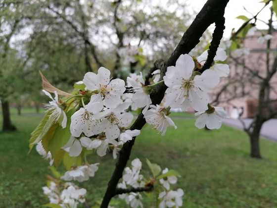
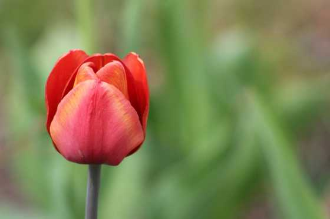
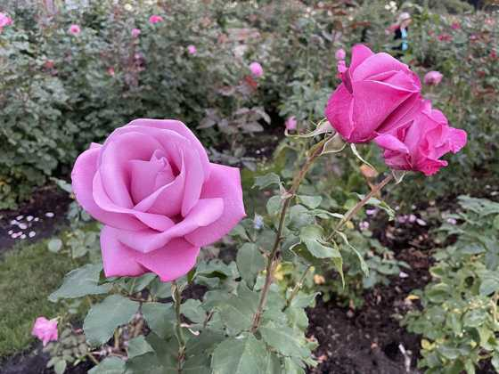
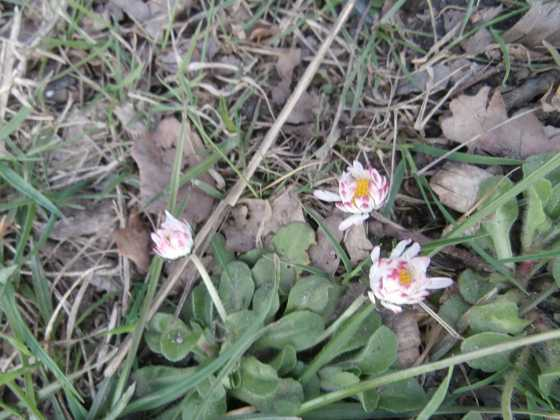
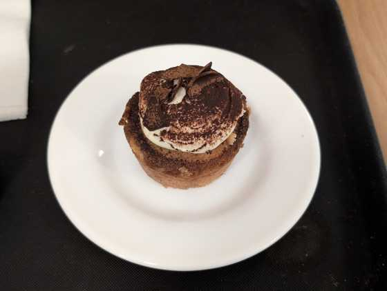
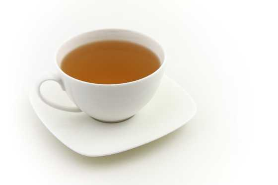

TOMISATO, CHIBA
住宅街のとなりで、
季節の花をのせた焼き菓子を。
富里市日吉台の小さな焼き菓子店。季節の花のアイシングクッキーやシフォンケーキを、ひとつずつ手づくりしています。
ABOUT
お店の由来と想い
KOHARU BAKE(コハルベイク)は、千葉県富里市日吉台の住宅街にある焼き菓子店です。店主のブログによると、富里産の卵や野菜を使い、丁寧に手づくりしているとのことです。
ブログでは「まずはなんでも挑戦」という前向きな姿勢が語られています。営業は基本的に土曜日の11時から17時で、イートインはなく、持ち帰りでのご利用です。
「KOHARU(小春)」という店名の由来は確認できていません。晩秋のおだやかな暖かさを表す「小春日和」を思わせますが、これは制作側のイメージです。





MENU
焼き菓子とドリンク
店主のブログやSNSで紹介されている品の例です。品ぞろえは日によって変わります。




価格・最新の品ぞろえ: 準備中
VOICE
口コミ(イメージ例)
イメージ例
お花の形のクッキーがかわいくて、手みやげにしました。
イメージ例
土曜のお散歩のついでに立ち寄って、シフォンケーキを持ち帰りました。
イメージ例
住宅街の小さなお店で、ほっとできる雰囲気でした。
上記は制作側が作成したイメージ例であり、実際のお客様の声ではありません。
ACCESS
アクセス
| 所在地 | 日本、〒286-0201 千葉県富里市日吉台5丁目26-1 |
|---|---|
| 電話 | 準備中 |
| 営業時間 | 準備中 |
| 定休日 | 準備中 |
| @koharu_bake |
ブログ等では土曜日11時〜17時と紹介されていますが、変更される場合があるため「準備中」としています。駐車場は1台分との記載があり、近隣へのご配慮が呼びかけられています。